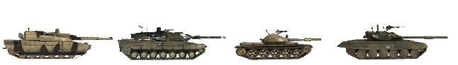
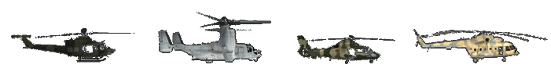

The Basics
Most importantly you should join a squad. Some servers even enforce it up by kicking solo players after a warning period. The game is by far the most fun to play in a functioning squad. If you need any help, just ask players in your squad what to do. If possible use Mumble. It is commonly used in PR. Playing PR:BF2 without a microphone will not give you the full experience so it’s a wise investment. If no one answers, try joining another squad or use general chat. There are many helping community members around who welcome new players and give them a hand. We expect you to have some basic understanding of BF2 when it comes to navigating the menu’s in-game such as scoreboard, map and kit selection. You can always start up BF2 and do the tutorial there to get acquainted with its interface. This manual will focus on the differences with BF2.
Kit selection & spawning
- When you begin playing, it is recommended that you only spawn as a rifleman with a sight of your choice. This way you can better learn the fundamental basics of gameplay.
- After learning infantry basics you can ask your SL to assign you a specialized kit when you feel up to the task. If you want to try out new equipment or a vehicle, you can do so easily in the co-op mode without inconveniencing your squad members or risking your team's assets.
- Kits that are specialized and more difficult to operate are generally limited and can only be obtained if certain conditions are met within a squad. These reserved kits are of limited supply to the team and you should always ask before requesting one.
- Kits can be requested from the main spawn menu (like BF2), a supply crate (see Logistics) or the rear of an APC / IFV. To have the ability to request a kit from a supply crate or vehicle, you must be a part of a squad.
In PR:BF2 you cannot spawn at every control point that your team controls. Spawn points available in PR:BF2 are:
- Your squad's rally point (RP) is a green circle surrounding a spawn point with your squad’s number adjacent to it. Depending on the location of your squad’s RP in relation to a team’s FOB will determine its longevity. Note: If you spawn on another squad’s rally point, you will automatically spawn at your own rally point, or any nearby FOB. If none available you will be moved to the main base of your team. If overrun by the enemy, your squad’s RP will disappear. RPs are only available to conventional forces. (see Deployable Structures)
{% figure "../assets/rally.png" %} A rallypoint. {% endfigure %}
- Map-specific team rally points. These usually expire 5 minutes after the round starts and can be used by the whole team. These also only allow maximum 12 people to spawn on it until it disappears.
- The commander rally point. This RP can only be placed by the commander, provided multiple squad’s leaders are in the vicinity of the CO. On the map this will be a rally point with a “C” next to it.
- Deployable forward operating base (FOB) or hideouts can be used by the entire team to spawn at, but must be constructed before becoming operational. On the map it will show as a spawn point with a green triangle. It comes online 90 seconds after being build. It becomes unspawnable for 30 seconds if 1 enemy is within 10m, 2 enemies within 50m, 4 enemies within 100m or 8 enemies within 150m. (see Deployable Structures)
- In the insurgency game mode, the defending insurgent team may spawn at the weapons caches that hasn't been revealed to the enemy, this is called the unknown cache. This spawn is also disabled if enemies becomes to close similar to the FOB.
{% figure "../assets/fob.png", "../assets/hideout.png", "../assets/cache-weapon.png" %} FOB, Hideout & weapon cache. {% endfigure %}
- Your team's headquarters, main base or permanent FOB. This is the only spawn point that is always available.
{% figure "../assets/acv.png" %} Armored Command Vehicle (ACV) found in mainbases only. {% endfigure %}
- Some maps feature parachute spawns where a airborne assault is simulated. These will be visualized by moving spawn markers on the minimap. Choose one and you will spawn with an automaticly deployed parachute.
In-game interface (HUD)
- In the PR:BF2 in-game HUD, players are notified by player-specific messages that can only be seen by that player. They are used to give players feedback about different in-game events for example:
- The reason why the player is not issued the kit being requested.
- The reason why the deployable asset that the player requested could not be built.
- That the player must exit the vehicle or the current seat to avoid punishment.
- PR also uses HQ Notifications which is displayed large orange type at the top left of the screen. These notifications give you updates on the current objectives, mission progress and other essential messages.
- Direct messages from server administrators and some types of game notifications will appear in orange text near the center of the screen. Some of these are just informative while others, especially messages from server administrators, may require your attention.
- Firing cross-hairs have been removed from the screen. If you want to shoot precisely, you need press the alternate firing key to aim down your weapon's sights, or use the BUIS for close quarter fighting (see the weapons chapter).
- Most 3D icons have been removed for all players. It is vital to ID your targets before engaging to avoid friendly fire. Learning the distinction of different camo, flags and the profile shape of the factions infantry helps you ID an enemy faster. As an example, to locate a Squad Leader, look for a radio antenna extending upwards from his backpack.
- No health status bar indicating your vital status. (see Health Management)
- The ammo counter only displays the weapon's fire mode and the number of remaining magazines.
- To estimate the amount of rounds left in your magazine you can open the communication rose(Q) and see a visual indicator of the amount of ammo left.

- The medic can see how far he is done healing a soldier with the HUD in the bottom right corner. Infantry can watch the same way how long until deployable is finished shoveling.
- There are no kill messages (friendly fire is an exception). Even the scoreboard will not show who is alive or dead on the enemy team. If you need to know whether someone is dead, you should look for his body.
- Only air vehicles use a permanent mini-map on the HUD. The full map overlay is available for everybody.
- The current map & layer can be viewed on the top of the screen when opening the map with squad/kit menu.
- Using the little arrow will show you the current map asset info overlay of all vehicles that are on the map including the respawn timers of friendly vehicles as well as whether or not they spawn with a delay or respawn upon destruction. Off Map Mortar or Artillery, also known as Area Attacks, are usually limited to 3 or 4 uses, and can only be used after relatively long waiting periods.
{% figure "../assets/assets.png" %} Current map asset info overlay. {% endfigure %}
- The remaining tickets of your team and the time left can only be viewed from the squad screen. The enemy tickets are not displayed.
- Suppression happens when you are under close fire by rifles, heavy weapons or nearby explosions. The screen will appear darker and become blurred like it is shaking. This effect simulates the reduced capability to return effective fire while being suppressed by the enemy.
{% figure "../assets/suppresion.png" %} Normal view of the game (left) and suppresion effect in action (right). {% endfigure %} * Located on the lower left hand side of the screen is a stamina bar. Sprinting and jumping will reduce the stamina available, not sprinting or jumping will slowly replenish it. When stamina has been reduced to 50% or lower, indicated by blinking, sprinting is no longer possible, jumping however still is. * When a player is dead, he will not be not revivable and black screen with an appropriate message will be displayed instead of seeing their surroundings. * Your weapon will deviate and become inaccurate to shoot based on the amount of movement you make. When aiming down sights, a deviation indicator will appear showing your weapon’s current level of deviation. The wider the indicator, the higher the spread; if the two dots collapse into one, your weapon has reached low deviation, but it might take one or two more moments for the weapon to reach its maximum accuracy still. * The automatic map spotting system has been removed from infantry. Air vehicles can still be spotted from within a vehicle. * Officers can send a contact report to the commander or use their radio to manually place a marker on the team's map. Normal soldiers can only shout a generic warning when they spot enemy units. * The Radio Commo-rose (default: Q & T) contain items with two functions. Left-clicking “RELOADING / CEASE FIRE” tells the people around you that you are changing magazines, while a right click tells them to stop shooting. The same principle applies to “GO, GO, GO / FALL BACK” and other such menu items.
{% figure "../assets/commorose.png" %} Commo-rose when pressing Q. {% endfigure %} * You can orientate yourself on the map using the direction element that you will find around your player icon. * Whilst equipped with particular weapons or equipment the main radio communication-rose is replaced by a small context-sensitive menu. When holding a field dressing or the medic bag you can use the “FIRST AID” command to inform nearby players that you want to heal them. Many pieces of equipment and some weapons use context-sensitive menus.
Health Management
Weapons in Project Reality are highly lethal and it is only a matter of time until you are shot and start bleeding. Although the HUD in PR doesn’t contain a health bar, once your health drops below 75% there will be visual cues to warn you such as a periodically darkening screen with a tunnel vision effect. At less than 25% HP, you’ll hear coughs and heavy breathing, at 10 HP you’ll lose your stamina and cannot regain it unless you heal above at least those 10 HP. Whilst bleeding, the tunnel vision and screen darkening effect will get stronger and stronger, limiting your combat effectiveness further and further.
Healing
Once in bleed status, you’ll continue to lose HP over time until you eventually pass out. To prevent this you have two ways of healing yourself. Almost every kit includes a field dressing which is selected by pressing the appropriate key or cycling through your weapon selection. Pressing fire throws it onto the ground. Within a second or two, the field dressing will disappear and the player standing next to it will regain 25% of their total health. The patch itself does not stop bleeding however. Should your HP, after applying the patch, still be below 75%, you’ll continue to bleed and have merely bought yourself some time, you thus have to apply more field dressings if available, scavenge hostile bodies if necessary.
The vast majority of kits are only issued a single field dressing for emergency use, players heavily rely on their squad’s or team’s medics to heal back to full HP. They and the Collaborator are the only ones issued a first aid kit for treating friendlies without the need for field dressings. When injured, either use mumble or the commo rose (“Q”) call option “Medic ” to get your medic’s attention. However, unlike in BF2, the medic can’t just throw the first aid kit on the ground but instead must hold it in their hands, be touching the player to be healed, and then hold down the left mouse button. A sound simulating bandages being ripped will designate that first aid is being applied. To be fully healed takes about 15 seconds, so be sure to do this in a safe spot.
{% figure "../assets/fielddressing.png", "../assets/kit.png", "../assets/epipen.png" %} Field dressing, first aid kit & epipen. {% endfigure %}
Reviving
If you are unable to be healed in time, you will become unconscious and the screen will say you’ve been critically wounded. This does not mean you are dead! When you become critically wounded a medic can still revive you for up to 5 minutes, saving your team valuable tickets. You can utilize Mumble to coordinate the medic to your location by using the Local channel (H) or squad’s Radio Net (0 numpad). You can also click Call Medic to become temporarily marked on the map of every medic in the team. In order to revive you, the medic select the epipen from their weapon selection and with the epipen in hand, inject and administer the epinephrine shot to the central mass area of the unconscious players torso by clicking and holding down left mouse button. The player will then become conscious but will only be at about 10% health and will still need healing. The medic and the recently revived player should find a safe area and continue the healing process there. If the player is stuck on uneven ground or in a bad position for reviving, it is required to drag the wounded body into a better position first. To drag a body as medic you need to be in the crouched position and stay in it. Then you can use the drag weapon slot to start dragging. You can drag in all directions including backwards.
{{ "Video Tutorial - Reviving" | youtube("auBgiI8IxWE") }}
Death
Sometimes players will not be revivable, such as when a player is killed in a vehicle. If you were recently revived and you become critically wounded again within 2 minutes, you will not be revivable the second time. If you are wounded and you are not revived within 5 minutes you will also go dead. If there is no chance of being revived, click Give up on the spawn screen. Now the screen will show that you are dead and you can prepare to respawn. The time you spent waiting to click give up counts toward your total respawn time.
Re-spawning
A player's respawn time is at least 45 seconds and at most 60 seconds plus temporary penalties. Time spent while waiting for a medic is subtracted from that time. Once a player dies he has to wait at least 5 seconds before spawning. These actions influence the respawn time:
- Player death: +3s
- Capturing CP or destroying objective: -3s
- Doing a defensive action: -1s
- Squad built forward outpost: -10s
A temporary spawn time penalty which only affects the next time you die (building up to 5 minutes) is added by these actions:
- Teamkill: 15 seconds per teamkill
- Suicide: 15 seconds
- Civilian getting captured: 90 seconds
- Civilian killed violating ROE: 120 seconds per civilian
- Own weapons cache destroyed: 300 seconds
To select a spawn point, bring up the spawn map and select an applicable location marked by a white dot. Once you’re happy with that spawn location, you must click the Spawn button in the lower right corner of the map screen to re-spawn into the game.
Logistics
Whether your running low on ammunition and need to rearm, want a new kit or simply want to build deployables, logistics keep your team alive.
Ammunition
To be able to rearm yourself, you'll need to get closer to one of several sources of ammo, which will then automatically re-fill your weapons. These sources are:
- Ammo bags - These can be found in the rifleman, militant, warrior and some insurgent kits and must be thrown (left click) on the ground, for you or other soldiers be able to rearm, or on deployables (tow, aa, mortars) to rearm them.
- Ammo boxes - Dropped by light transported vehicles, APCs and IFVs.
- Light/Heavy supply crates - More information in the next section
- Weapons caches - Available only for insurgents
- Vehicle depot - Present in all main bases, it also heals you
{% figure "../assets/ammobag.png", "../assets/supplycrate.png", "../assets/inscrate.png", "../assets/cacahe.png", "../assets/depott.png" %} Ammunition bag, Coalition forces ammo crate, Insurgent forces ammo crate, weapon cache & Vehicle depot. {% endfigure %}
Be aware that with the exception of Weapons caches and Vehicle depot all other ammo sources are limited. Eventually these sources will deplete and disappear. It is even possible ammo sources deplete before you're completly rearmed. Ammo bags, ammo boxes and supply crates use supply points to determine how long they can be used. You can find out the remaining supply points of supply crates and ammo boxes by looking at it for a second. It will then appear next to the compass. The various weapons available in PR require different ammounts of supply points to be replenished. Utility items such as the grappling hook, tripflares and field dressings cost less to resupply per use than explosive ordnance such as anti-tank rockets/missiles, fragmentation grenades and mines. See below tables for the resupply cost of the corresponding weapon category and type:
Firearms
| Type | Supply points cost |
|---|---|
| Pistols low capacity | 15 |
| Pistols high capacity | 30 |
| PDW | 30 |
| SMG | 45 |
| Shotgun primary | 50 |
| Shotgun breacher | 25 |
| Rifle | 60 |
| Sniper | 40 |
| LMG | 150 |
| GPMG | 200 |
Grenade Launcher/Rifle Grenades
| Type | Supply points cost |
|---|---|
| Anti-Tank x1 | 70 |
| Anti-Tank x2 | 140 |
| Flare | 60 |
| Fragmentation low capacity | 80 |
| Fragmentation high capacity | 120 |
| Smoke | 60 |
Items & Utilities
| Type | Supply points cost |
|---|---|
| Ammo box | 200 |
| C4 low capacity | 45 |
| C4 high capacity | 75 |
| Tripflare | 20 |
| Grappling hook | 40 |
| Epipen | 60 |
| Field dressing x1 | 30 |
| Field dressing x3 | 75 |
| Field dressing x6 | 120 |
| Field dressing x12 | 180 |
Heavy ordnance & munitions
| Type | Supply points cost |
|---|---|
| Fragmentation grenade x1 | 60 |
| Fragmentation grenade x2 | 120 |
| Fragmentation grenade x4 | 240 |
| Smoke grenade low capacity | 40 |
| Smoke grenade high capacity | 60 |
| Signal smoke grenade | 30 |
| Anti-personel mine x2 | 140 |
| Anti-personel mine x3 | 210 |
| Conventional mine | 420 |
| Insurgent mine | 160 |
| Light IED | 60 |
| Heavy IED | 80 |
| Anti-air missile x1 | 100 |
| Anti-air missile x2 | 170 |
| Light anti-tank x1 | 70 |
| Light anti-tank x2 | 140 |
| Light anti-tank x3 | 210 |
| Light anti-tank x4 | 280 |
| Medium anti-tank x1 | 80 |
| Medium anti-tank x2 | 160 |
| Medium anti-tank x3 | 240 |
| Heavy anti-tank x1 | 90 |
| Heavy anti-tank x2 | 180 |
| Guided anti tank | 120 |
Note that on a local server the resupply system will not work as described. Every weapon slot will require 100 supply points to refill regardless of item type.
Requesting a kit costs 200 supply points. Be aware that re-arming an ammo bag at for example an ammo box or light/heavy supply crate will cost as many points at it provides (200). The amount of supply points for the supply sources are:
- Ammo bags : 200 (will only count for 43 supply points when used by an asset emplacement like a TOW or mortar for example)
- Ammo boxes : 450
- Light supply crates : 1500
- Heavy supply crates : 3000
Resupplying is not instant but takes a few seconds, depending on the ammo source as well with the amount of ammo you need to resupply.
Additionally if you're not rearming, confirm that the Light/Heavy supply crates is indeed yours, rearming from enemy supply crates is not possible.
Supply Crates
There are two types of supply crates in PR:BF2 - Light Supply Crate and Heavy Supply Crate. While both allow to ressuply players and build deployables a Light crate is the equivalent of half of the Heavy Supply Crate meaning that you will need 2x light supply crates where only 1x heavy supply crate is needed. To learn more about deployable emplacements see the Deployable Structures chapter.
{% figure "../assets/largecrate.png", "../assets/smallcrate.png" %} Here you can see the heavy supply crate on the left and the light version on the right. {% endfigure %}
Just like rearming, requesting kits from crates will deplete the supply crates. Each kit will cost 200 points, with light crates having 1500 (7x kits) and heavy ones 3000 (14x kits).
Requesting kits from a crate that does not have enough points will still grant you the kit but the crate will be destroyed in the process.
Light Supply Crate can be transported by:
- Light Helicopters such as the Huey, Lynx and Zhi-9B (One Crate)
- Transport trucks (One Crate)
While, Heavy Supply Crate can be transported by:
- Medium Lift Helicopters such as the Black Hawk, Mi-17 and NH-90 (One Crate)
- Heavy Lift Helicopters such as the Chinook, Zhi-8KA and MV-22 (Two Crates)
- Logistic trucks: (Two Crates)
The ownership of the crate is depicted by the flag display on top of the crate.
Repair Drop
Logistic trucks also have the ability to drop a repair station. They are necessary for field repairs to vehicles that are heavily damaged and cannot move.
{% figure "../assets/reapir.png" %} Repair drop. {% endfigure %}
Score
A player's score is divided in teamwork points and individual points. It speaks for itself that doing team related activities (building, driving vehicles, defending/attacking flags) contribute to the first and individual actions (killing players) contribute to your personal score.
The total score of a player can never go below 0 but the teamwork score can become negative. There are also score multipliers for when you are for example in a vehicle or a squad leader. Here are some other score additions and deductions. These are not all but give you a good idea on what you can achieve.
- Capturing a civilian: +100
- Killing a civilian (outside ROE): -100
- Destroying your own objective: -100
- Destroying enemy objective: +150
Mortars
A fixed mortar position that can provide indirect fire support over long distances. All factions can fire high-explosive rounds. Conventional forces and the militia can also use air-burst and smoke rounds. Mortars cannot be constructed on maps smaller than 2km.
- High Explosive (HE) (press 1 to select): Most common type of mortar round. Does the most damage directly to the target. Ideal for light armored targets and emplacements.
- Airburst (press 2 to select): Explodes in the air above the ground. Covers a larger area but does less damage overall. Ideal for engaging infantry inside buildings and on uneven terrain.
Once mortars are needed you can use the mortar’s calculator (press 3 to select). The distance to the target and the difference in elevation can be entered into the calculator by clicking on the numbers in the “Range” and “Height” fields. To get the range make sure you SL’s marker is on the target, then open the map and you’ll find the range listed under the map. Once you are done just click the “Calculate” button to display the required barrel elevation. The elevation can be adjusted with the W and S keys while the deflection is changed using the A and D keys. When both values are set, just select the required rounds and fire. There are both Air-Burst and Impact rounds available that share ammunition.
{% figure "../assets/mortars.png" %} The mortar calculator interface. {% endfigure %}
Close Support Bridges (CSB)
When in need to cross small rivers or damaged bridges, conventional forces can deploy CSBs using their logistic trucks - which carries two of them. In Project Reality CSBs can only be used to fill the gaps of destroyed bridges and in predetermined locations identified by (obvious) small heaps of sand positioned across a natural obstacle, like a river.
CSBs are very narrow, so drive carefully when crossing them.
The deployment process for CSBs is very simple: 1. Drive a logistics truck to the position where the CSB will be deployed. 2. Position the front or back of the truck as close as possible to the deployment position. 3. Select the CSB as active equipment of the truck. 4. Press alternate fire to deploy the bridge.
{{ "Video Tutorial - CSB Deployment" | youtube("Vn66KbNrVJA") }}
{% figure "../assets/csb.png" %} CSB from truck being deployed. {% endfigure %}
In some cases multiple CSBs are required to span the complete distance. In such situations, you're required to drive to the end of the incomplete bridge and deploy a new CSB and repeat untill its finish.
Battlefield Navigation
It is pretty easy to get lost on the large maps of PR:BF2. The slow pacing and team coordination also requires players to communicate locations in a clear and concise manner. PR:BF2 offers 4 tools to aid players with this.
- Squad leaders can use their squad order marker to communicate locations to their squad and the commander. The direction to the marker is indicated by a chevron above the compass. If you are within 75m of the marker you'll also see a 3D icon which shows the location in front of you. The marker will also be visible on the map.
{% figure "../assets/target.png", "../assets/build.png", "../assets/observe.png", "../assets/defendmarker.png", "../assets/demolish.png", "../assets/move.png" %} Targe, build, observe, defend, demolish and move marker, respectively. {% endfigure %}
- A precision degree compass to the bottom central area of your screen. The compass can be used to give exact bearings of nearby spotted enemies. The 8 Cardinal Directions are clearly indicated along with the degree bearing labels which incrementally increase every 15° with major divisions every 5°. If you just want to communicate a general direction it is best practice to say the cardinal direction, followed by the degree and in some situations the distance if appropriate. For example “Enemy spotted NE 75° degrees 200 meters out”.
- If the target is visually in line with a numbered bearing on your compass when you are facing that direction, you simply communicate that number.
- Remember that all large compass notches equal 5 degrees. If the target is in line with a notch to the right of a labelled notch along from 75° then right you add 5°. So the target is at 80°.

- Underneath the compass notches is a triangle which indicates your current bearing. If you are in a Squad, your Squad Leader’s last/currently issued order shows as a chevron as well. If you line up the chevron with the triangle, you’re looking at the location of the order mark.
- The maps in PR:BF2 contain grid reference labels and keypad subgrids. The Grid labels are found on the upper and left border of the map. The map is divided into 169 grid squares starting with A1 in the upper left corner and ending with M13 in the lower right corner. Each grid square is divided in 9 subgrids. Those are labeled from 1 to 9 in the same manner as a computer's numpad are arranged. (Top row from left to right 7, 8, 9). You can communicate locations by giving out a grid reference. For a rough location you only say the main grid field (e.g. D6). For precise locations you also add the subgrid location (e.g. D6-2). Grid references are mostly used to communicate locations between squads. When using Mumble the first letter of the Grid reference is usually annunciated using the NATO phonetic alphabet. The codewords are Alpha, Bravo, Charlie, Delta, Echo, Foxtrot, Golf, Hotel, India, Juliett, Kilo, Lima, Mike, November, Oscar, Papa, Quebec, Romeo, Sierra, Tango, Uniform, Victor, Whiskey, X-ray, Yankee and Zulu
- The scale of each grid square is displayed in the bottom right hand corner of the map. A 1km map will be indicated by a 75m grid squad, 150m for a 2km and 300m for a 4km map. You can easily estimate distances on the map using the grid squares. The squad leader's squad screen also displays the approximate distance to your current squad marker below the map of the battlefield.
{% figure "../assets/grid.png" %} {% endfigure %}
Basic Vehicle Information
Many vehicles behave quite differently compared to BF2 and require more advanced knowledge to operate. Since they also have very long spawn times (up to 20 minutes) it is vital to know how to keep them away from problematic situations. This part will focus on explaining vehicle types and how they influence the team. For more details on operating vehicles see further in this manual in the Operating Vehicles section.
There are many vehicle types in PR:BF2 used as classification. This isn’t always directly in line with their Real Life counterpart due to gameplay reasons. The following list shows you the main classes of vehicles in PR:BF2:
- Jeep: small transport vehicles that not always fill the entire squad. Can always drop small ammo crates. Sometimes are fitted with machine guns nests.

- Civilian vehicles: PR:BF2’s insurgent forces have access to a range of civilian cars and technicals mounted with machine guns, rocket-pods and SPG-9 recoilless rifles. They also have a flatbed with a mounted AA-gun, bomb trucks and bomb cars in their arsenal.

- Truck: come in both transport and logistic variants. The transport variant is capable of dropping 1 light supply crate and can fit an entire squad. The Logistic variant can only fit 2 soldiers and can drop 2 heavy supply crates, repair stations and Close Support Bridges (more on this later).

- Armored Personnel Carrier (APC): large armored vehicles more often than not armed with heavy weaponry. Often do not possess the force to defeat other heavy armored targets such as IFVs and tanks but are the best of all vehicles types at assisting infantry. Can fit 2 crewman (driver and gunner) and up to 6 soldier passengers.

- Infantry Fighting Vehicle (IFV): Better armed and stronger than most APCs with often capabilities to defeat heavy armored targets using AT-Missiles. Are not always capable of transporting infantry. Under this category often also fall the recon-vehicles.

- Anti-Tank Missile Mounted Vehicle (ATM): The name speaks for itself. These are vehicles armed with AT-missiles to destroy other armored vehicles. Cannot transport infantry.

- Tank: Our heaviest of armored vehicles. They come equipped with AP, HE and COAX weaponry.

- Anti-Air Vehicle: These are usually light armored vehicles with only the ability to take out enemy aircraft and helicopters. They can use missiles or/and heavy guns.

- Boat: PR:BF2 has a variety of boats both armed and un-armed.

- Transport Helicopter: These helicopters usually come equipped with door-guns for the mounted infantry to use.They are also capable of dropping heavy supply crates. There are light, medium and heavy transport choppers. See the section on Supply Crates to read on which variant has which crates available to it.

- Attack Helicopters: These helicopters come equipped with machine-gun pods and a variety of rockets and missiles. There are light, medium and heavy variants. Recon helicopters with the ability to laze targets and use their thermal cameras also fall under this category in PR:BF2. They are not always armed.

- Jets: PR:BF2 has a wide variety of jets. There are light and heavy attack jets, fighter jets, bombers and fighter-bombers.

All friendly vehicles are marked on the map with unique icons for easy identification.

- If a team vehicle asset is destroyed it incurs a ticket penalty:
- Jeep or truck: 2 tickets
- Transport helicopter: 5 tickets
- APC/AAV/RECON: 5 tickets
- Tank or IFV: 10 tickets
- Jet or attack helicopter: 10 tickets
- Vehicles are Team Locked and you cannot operate enemy vehicles of any kind.
- Vehicles can only be entered from appropriate positions on the hull.
{% figure "../assets/entrypoints.png" %} Vehicle entry points can differ per vehicle. Look for hatches. {% endfigure %}
- Normal soldiers are allowed to drive small unarmored vehicles such as jeeps, trucks and boats without the need for any specialized kit. If you require a crewman or pilot kit to operate a vehicle position, you will receive a warning message upon entering it and the screen will fade to black. If you do not exit the vehicle position within a few seconds, you will die.
- When exiting a moving or burning vehicle you will become wounded and possibly die. The faster the vehicle moves the greater the chance of death.
- Destroying vehicle wrecks does not influence score although a warning message states otherwise when shooting friendly wrecks.
- When manning stationary or vehicle weapons it takes a specific warm up time before they have the ability to fire:
- MG: 5 seconds
- Anti-Air Missile: 5 seconds
- AT-emplacement: 10 seconds
- Armor main cannon: 30 seconds
- Most Stationary AT-Weapons have optics with fixed zoom capability. Some of them even offer thermal optics.
- Exiting vehicles in mid-air and falling into water from high altitudes will injure you and may result in your death.
- Players can request kits from a APC’s/IFV’s entry position.
- Armored vehicles are more vulnerable when attacked from their flanks. The armor on the rear of the vehicle is the weakest. A single well-placed anti-tank projectile can disable or take them out.
- On public servers (not in local gamemodes) you can quickly switch to the next available free seat in a vehicle by pressing F8.
- When in a vehicle, you can see the information on the occupied seats in the bottom left of the the HUD. It shows only important crew seats as squared markers. This includes driver and gunner positions. Passenger seats do not have such markers and are shown as a seperate counter.
{% figure "../assets/seaticons.png" %} Important crew members are shown as squared markers. Passengers use a total counter above the vehicle icon. {% endfigure %}